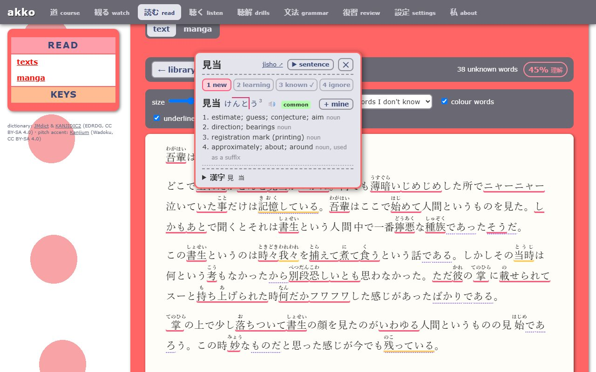
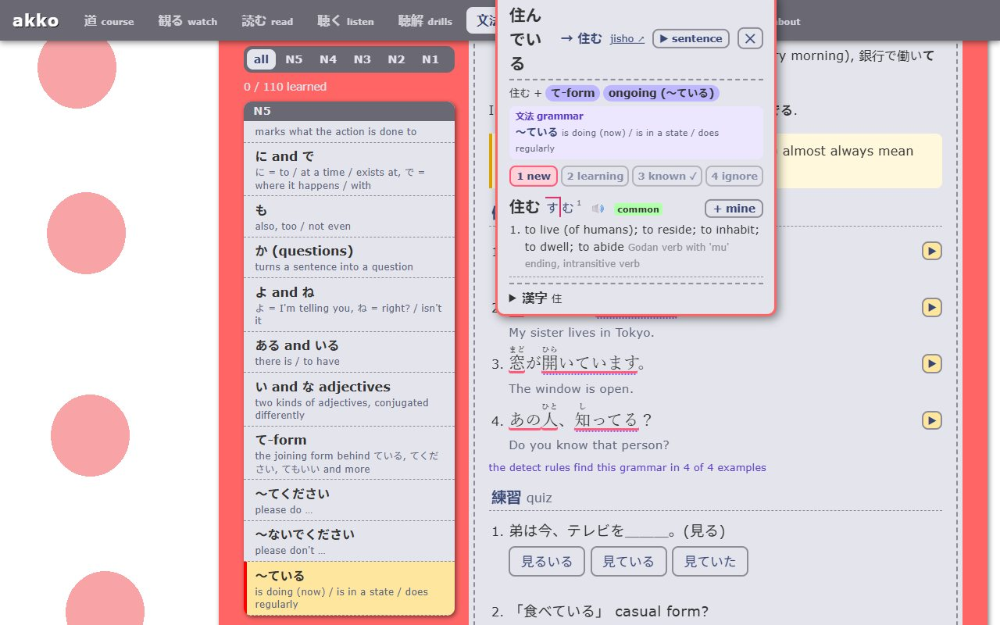
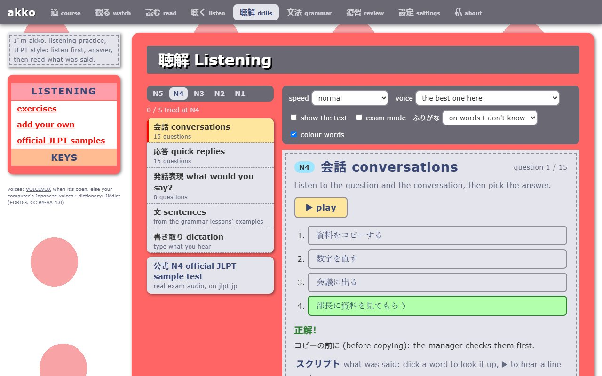
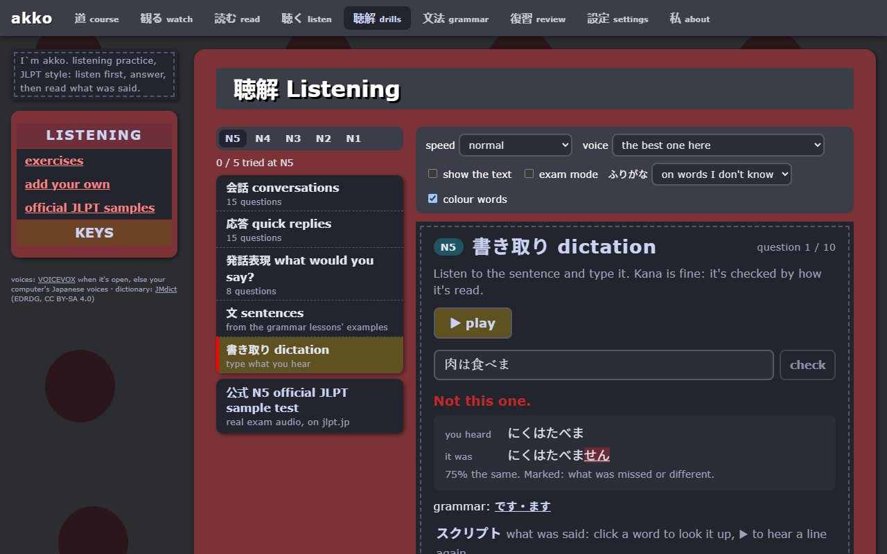
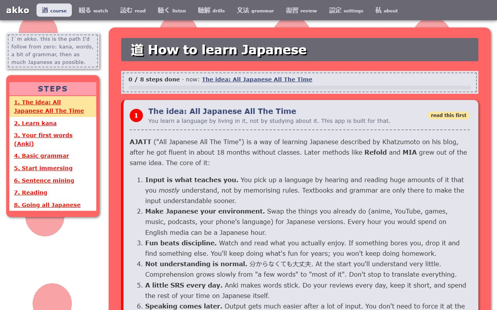
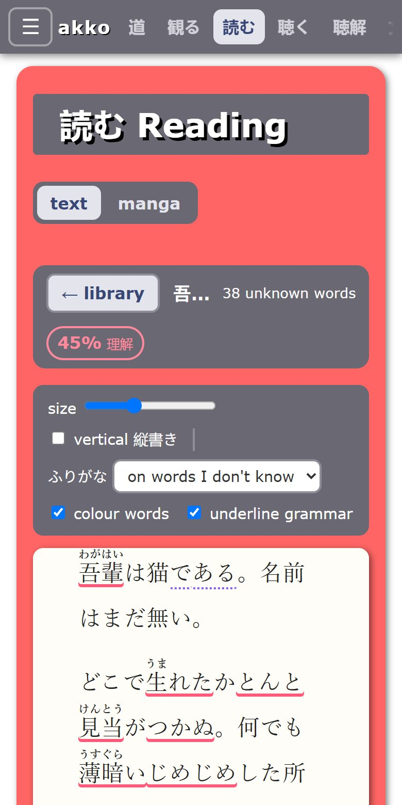

観る Watch
Play your videos with Japanese subtitles you can click. akko searches Japanese subtitles for anime, or uses the ones inside the video file. Skip intros, play a whole season in a row, and see how much of each episode you understand.
日本語 ・ English
Watch anime, read books and manga, listen to podcasts. Click any word you don't know to look it up, then send it to Anki. akko keeps track of what you know, and it's all on your own computer.
Or run it from the code on Windows, macOS or Linux. Learning English? It does that too.

Play your videos with Japanese subtitles you can click. akko searches Japanese subtitles for anime, or uses the ones inside the video file. Skip intros, play a whole season in a row, and see how much of each episode you understand.
Books (EPUB, text), saved web pages, subtitle files and manga. Every word is clickable, with furigana only on the words you don't know yet. Vertical 縦書き too.
Podcasts with transcripts you can click, and the episode you left off at.
192 JLPT-style questions from N5 to N1: conversations, quick replies, "what would you say?", dictation. Mistakes come back until you get them right.
110 short lessons from N5 to N1, with examples and quizzes. Grammar you've studied is underlined wherever it appears in subtitles and books.
A step-by-step path from zero to immersion, with goals akko checks for you: words known, time listening, pages read.
JMdict, kanji and pitch accent, offline. Add more dictionaries in Yomitan format (Jitendex, monolingual ones) and frequency lists.
"+ mine" sends the word, its sentence, the line's audio and a screenshot to Anki, through AnkiConnect.
Hear any word or sentence, with free natural voices from VOICEVOX (one click to set up) or your computer's own.
No account, no tracking, no subscription. Your words and progress stay on your computer, with automatic backups.
Turn it on and use the same akko from your phone on your Wi-Fi, for reading in bed.
A dark theme for watching at night, and the interface in English or 日本語.





The newest version is on the releases page.
Installs akko and keeps it up to date by itself.
⬇ akko-setup.exeWindows 10 / 11, 64-bit
No install: one file you can run from anywhere, even a USB stick.
⬇ akko-portable.exeWindows 10 / 11, 64-bit
Any computer with Node.js: macOS, Linux, or Windows. Then open http://127.0.0.1:3000 in your browser.
git clone https://github.com/JaoN64dev/Immersion-app-akko.git
cd Immersion-app-akko
npm install
npm start"Windows protected your PC"? akko isn't code-signed yet (that costs money), so Windows warns about it the first time. Click More info → Run anyway. The code is all public on GitHub.
Yes. akko is open source (MIT license), with no account, ads or paid tier. The dictionaries and voices it uses are free too.
The dictionary, grammar, drills and your words work offline. The internet is only needed to search subtitles, load podcasts, download word recordings the first time, and check for updates.
On your computer, in the app. Nothing is sent anywhere. akko makes an automatic backup every few days, and Settings → Backup lets you save or restore one, or move to another computer.
The ready-made download is for Windows for now. On a Mac or Linux, run it from the code with Node.js and use it in your browser. Everything works there, except the Windows voices; VOICEVOX works on all three.
Open your own video files (.mkv, .mp4…) or paste a link. akko finds Japanese subtitles for anime by itself, and uses the ones inside the video file when there are any.
Pick English the first time you open akko. You get an English dictionary with American pronunciation, translations into your language, English grammar lessons (A1 to C1) and a course.
Yes: in Settings, turn on "Use akko on your phone", then scan the QR code with your phone on the same Wi-Fi and type the PIN. akko keeps running on your computer.